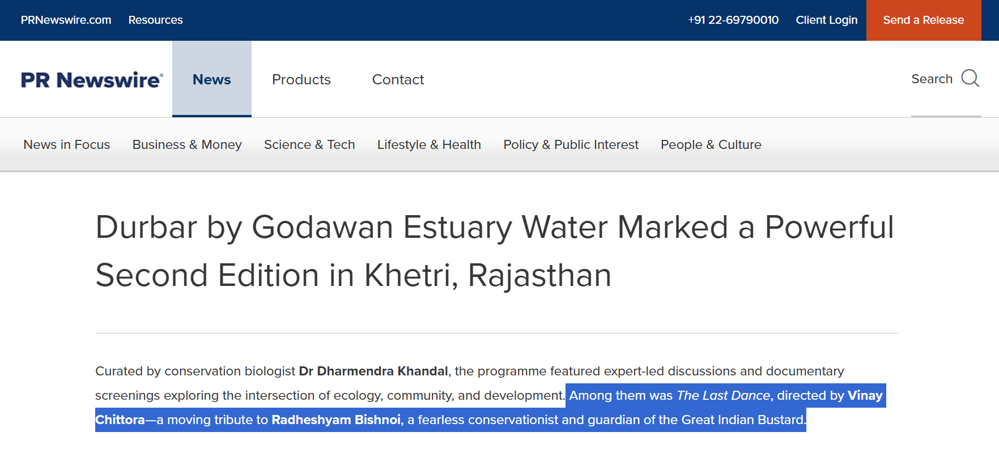

Durbar by Godawan Estuary Water: Second Edition in Khetri, Rajasthan
A BrandHub feature on Godawan Durbar’s Khetri edition, bringing together craft, culture, and conservation in Rajasthan.
I’m Vinay Chittora — a disabled wildlife photographer and aspiring filmmaker based in Rajasthan. Through Cane & Camera, I document birds, mammals, habitats, and conservation stories with patience, clarity, and low-impact field practice.
The cane is practical support for mobility in the field, and it also represents a slower way of working — attentive, grounded, and less intrusive. The camera is my storytelling tool: a way to translate observation into photographs and films that invite care for wild places.
I grew up around the Mukundara Hills Tiger Reserve landscape — a mosaic of scrub, forest edges, river systems, and grassland pockets. That ecological diversity shaped how I see behavior, habitat, and seasonality, and continues to guide my work today.
I prioritize ethical field practice: patience, observation, natural light, and minimal disturbance. I do not bait, crowd, or pressure wildlife for images. The goal is to document authentic moments with respect for species and habitat.
I’m building a long-term body of work across Wildlife, Documentaries, and conservation storytelling projects. The aim is a sustainable livelihood that stays aligned with nature, field ethics, and meaningful public awareness.
I’m open to editorial assignments, NGO collaborations, licensing, screenings, and educational talks. If you’re planning a project, please get in touch here.
Selected features, interviews, and mentions.
A BrandHub feature on Godawan Durbar’s Khetri edition, bringing together craft, culture, and conservation in Rajasthan.

Coverage highlighting place-based programming and conservation dialogue in the Aravalli landscape.

Travel trade coverage of heritage, ecology, and storytelling-led event programming in Rajasthan.

A feature on conservation-rooted experiential programming and documentary storytelling.

A story on place-rooted conservation and cultural programming across the Khetri hills.

Official release outlining event goals around conservation awareness and local engagement.